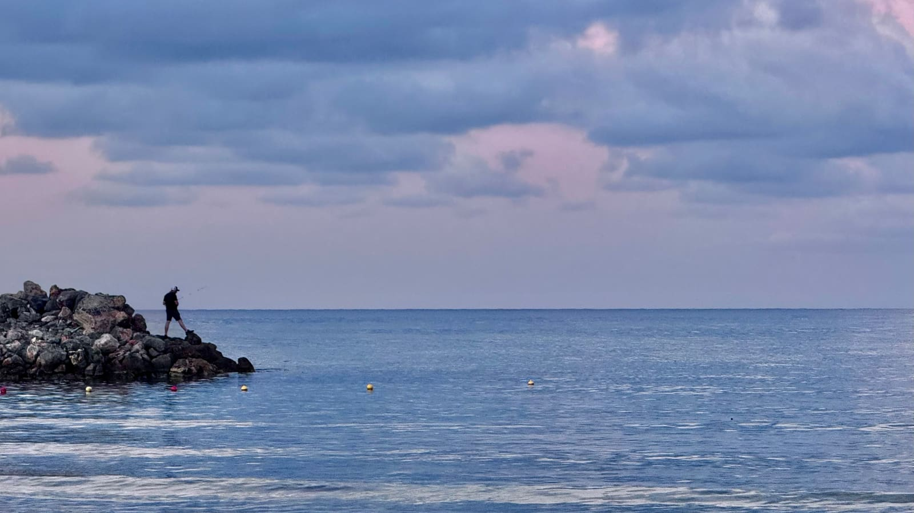

- Start
- Reiseziele
- Kreta
Reiseziel · Griechenland
Kreta Pauschalreise: Griechenlands große Freiheit
Traumstrände im Westen, Tavernen-Abende überall und eine Woche 4★ mit Halbpension oft schon für 550–800 € pro Person: Kreta ist der Allrounder unter den Mittelmeer-Zielen. Hier erfährst du, welche Region zu dir passt, wann du am günstigsten fliegst – und wo beim Buchen echtes Sparpotenzial liegt.

*Richtwert für Pauschalreisen mit Flug je nach Saison und Abflughafen – tagesaktuelle Preise im Vergleich.
Kreta ist die größte Insel Griechenlands – und fühlt sich an wie ein eigenes kleines Land: Berge, die bis in den Mai Schneereste tragen, karibisch helle Strände im Westen, lebhafte Hotelmeilen im Norden und einsame Buchten im Süden. Genau diese Vielfalt macht die Wahl der richtigen Region zur wichtigsten Entscheidung deiner Kreta-Pauschalreise.
Welche Region auf Kreta passt zu dir?
Chania & der Westen: die Postkarten-Strände
Der Westen ist Kretas Vorzeigeseite: Der Strand von Elafonissi schimmert rosa, die Balos-Lagune sieht aus wie Karibik, und die venezianische Altstadt von Chania gehört zu den schönsten Griechenlands. Pauschalhotels findest du vor allem in Platanias, Agia Marina und Georgioupolis. Wer zum ersten Mal nach Kreta fliegt und Strandbilder wie aus dem Katalog will, ist hier richtig – Elafonissi und Balos erreichst du am besten mit Mietwagen oder per Ausflug.
Rethymnon: Altstadt trifft Sandstrand
Rethymnon ist der Kompromiss-Champion: eine liebevoll erhaltene Altstadt mit venezianischem Hafen und direkt daneben ein rund 12 Kilometer langer Sandstrand mit Hotels in jeder Preisklasse. Ideal, wenn du abends durch Gassen bummeln und morgens ohne langen Transfer am Meer liegen willst. Für Familien ebenfalls eine gute Wahl, denn der Strand fällt flach ab.
Heraklion & der Norden: große Auswahl, großes Nachtleben
Zwischen Heraklion, Chersonissos und Malia liegt die größte Hoteldichte der Insel – von der günstigen 3★-Anlage bis zur 5★-Hotelburg mit Poollandschaft. Die Transferzeiten sind kurz (der Hauptflughafen liegt direkt bei Heraklion), die Paketpreise oft am niedrigsten, und das Nachtleben in Malia und Chersonissos ist legendär laut. Kultur gibt es obendrauf: Der Palast von Knossos liegt nur wenige Kilometer entfernt.
Agios Nikolaos & Elounda: ruhig und edel
Im Osten wird es leise und ein bisschen nobel: Rund um Agios Nikolaos und Elounda am Mirabello-Golf stehen einige der besten Hotels Griechenlands. Perfekt für Paare, Ruhesuchende und alle, denen guter Service wichtiger ist als Animation am Pool.
Der Süden: für Individualisten
Der Süden bleibt Entdeckern vorbehalten: Orte wie Plakias, Matala oder Ierapetra sind klein, das Libysche Meer hat das wärmste Wasser der Insel – aber klassische Pauschalpakete sind hier rar. Am besten als Tagesausflug mit dem Mietwagen vom Norden aus.
Die besten Kreta-Deals landen zuerst im Kanal.Kostenlos · kein Spam · jederzeit raus
Kanal beitretenBeste Reisezeit für Kreta
Die Saison läuft von Mai bis Oktober. Das beste Gesamtpaket aus Wetter, Wassertemperatur und Preis bekommst du im Juni und September; Mai und Oktober sind die Preis-Tipps für alle, die es nicht brütend heiß brauchen. Juli und August sind zuverlässig sonnig, aber voll und teuer – und der Meltemi-Wind kann an der Nordküste kräftig blasen.
| Monat | Luft | Wasser | Sonnenstunden | Fazit |
|---|---|---|---|---|
| Mai | 24 °C | 19 °C | 9 | Preis-Tipp |
| Juni | 28 °C | 22 °C | 11 | Bestes Gesamtpaket |
| Juli | 30 °C | 24 °C | 12 | Hochsaison, heiß & voll |
| August | 30 °C | 25 °C | 11 | Hochsaison, am teuersten |
| September | 28 °C | 24 °C | 10 | Badewarm, wird ruhiger |
| Oktober | 25 °C | 22 °C | 7 | Spätsommer, günstig |
Alle Werte sind ca.-Angaben für die Nordküste; an der Südküste ist es meist 1–2 Grad wärmer, und die Badesaison hält dort länger. Merke: Das Meer ist im Frühsommer noch frisch, dafür von August bis weit in den Oktober am wärmsten – für reine Badeurlaube ist der Spätsommer deshalb oft die klügere (und günstigere) Wahl.
Preise & Spartipps: Was Kreta kosten darf
Als Richtwert je nach Saison und Abflughafen: 7 Nächte im 4★-Hotel mit Halbpension und Flug kosten meist 550–800 € pro Person, in den Sommerferien auch darüber. All Inclusive ist auf Kreta spürbar teurer als etwa in der Türkei – oft 700–1.000 € für dasselbe Hotelniveau. Unsere ehrliche Meinung: Auf Kreta ist Halbpension meist die bessere Wahl, denn die Tavernen gehören zum Urlaub dazu und sind selten teuer. 3★-Pakete gibt es in der Nebensaison teils schon um die 450–500 €.
- Mai/Juni oder Mitte September bis Oktober reisen – gleiche Insel, oft 20–40 % kleinerer Preis als im Hochsommer.
- Halbpension statt All Inclusive wählen und abends in die Taverne gehen – günstiger, besser, und du siehst mehr von der Insel.
- Beide Flughäfen prüfen: Kreta hat zwei (Heraklion und Chania). Wer beim Zielflughafen flexibel ist, findet öfter einen Preisknaller.
- Sommerferien früh buchen, Nebensaison auf Deals warten – wann was gilt, erklärt unser Vergleich Frühbucher oder Last Minute.
- Mietwagen vorab online vergleichen statt am Schalter im Urlaubsort zu mieten – gerade auf Kreta lohnt sich das, siehe unser Mietwagen-Vergleich.
Selbst vergleichen
Kreta-Pauschalreise zum Bestpreis
Abflughafen, Zeitraum und Verpflegung eingeben – der Rechner vergleicht die Kreta-Angebote der großen Veranstalter tagesaktuell.
Häufige Fragen zu Kreta
Ost- oder Westkreta – was ist besser?
Der Westen um Chania punktet mit den berühmtesten Stränden wie Elafonissi und Balos und ist insgesamt grüner. Der Osten um Agios Nikolaos ist ruhiger und edler, die Nordküste zwischen Heraklion und Malia hat die größte Hotelauswahl und das meiste Nachtleben. Für den ersten Kreta-Urlaub empfehlen wir den Westen, für reine Erholung den Osten.
Wann ist die beste Reisezeit für Kreta?
Die Badesaison läuft von Mai bis Oktober. Das beste Verhältnis aus Wetter und Preis bieten Mai, Juni und der Zeitraum von Mitte September bis Oktober: 24 bis 28 Grad Luft, angenehmes Wasser und spürbar günstigere Hotels als im Hochsommer. Juli und August sind zuverlässig sonnig, aber voll und am teuersten.
All Inclusive oder Halbpension auf Kreta?
Anders als in der Türkei ist All Inclusive auf Kreta vergleichsweise teuer. Halbpension ist oft die bessere Wahl: Abends isst du in den Tavernen häufig für 15 bis 25 € pro Person richtig gut – das ist günstiger und du siehst mehr von der Insel. All Inclusive lohnt sich vor allem für Familien, die viel Zeit in der Anlage verbringen.
Lohnt sich ein Mietwagen auf Kreta?
Ja, zumindest für ein paar Tage. Kreta ist rund 260 Kilometer lang, und Highlights wie Elafonissi, die Balos-Lagune oder die Samaria-Schlucht erreichst du mit Bus oder Pauschal-Ausflug nur umständlich. Vorab online gebucht ist ein Mietwagen meist deutlich günstiger als am Schalter im Urlaubsort.
Wie warm ist das Meer auf Kreta im Oktober?
Im Oktober hat das Meer rund um Kreta noch etwa 22 Grad – oft wärmer als die Abendluft. Baden ist damit problemlos möglich, meist bis Anfang November. Zusammen mit den niedrigen Nebensaison-Preisen ist der Oktober einer unserer Lieblingsmonate für Kreta.
Weiterlesen
Zypern
Eine der längsten Badesaisons im Mittelmeer – Badeurlaub locker bis in den November.
Zum Reiseguide ReisezielMallorca
Der Pauschal-Klassiker: welche Region zu dir passt und was All Inclusive kosten darf.
Zum Reiseguide RatgeberAll Inclusive: Wann es sich lohnt
Die ehrliche Rechnung: wann das Rundum-Paket gewinnt – und wann Halbpension wie auf Kreta.
Zum RatgeberKreta im Blick
Kreta-Deals zuerst im Kanal
Gute Kreta-Deals sind oft nach wenigen Stunden ausgebucht. Im WhatsApp-Kanal bekommst du sie, sobald wir sie geprüft haben – kostenlos und ohne Spam.